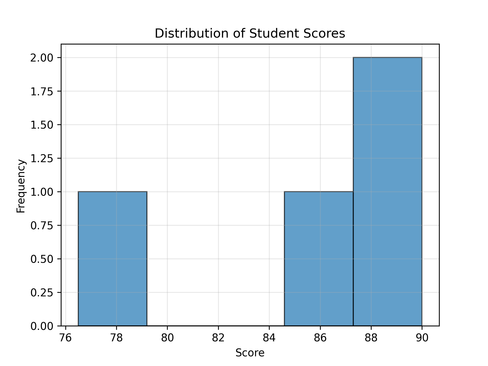
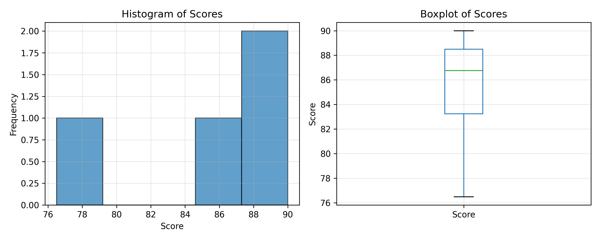
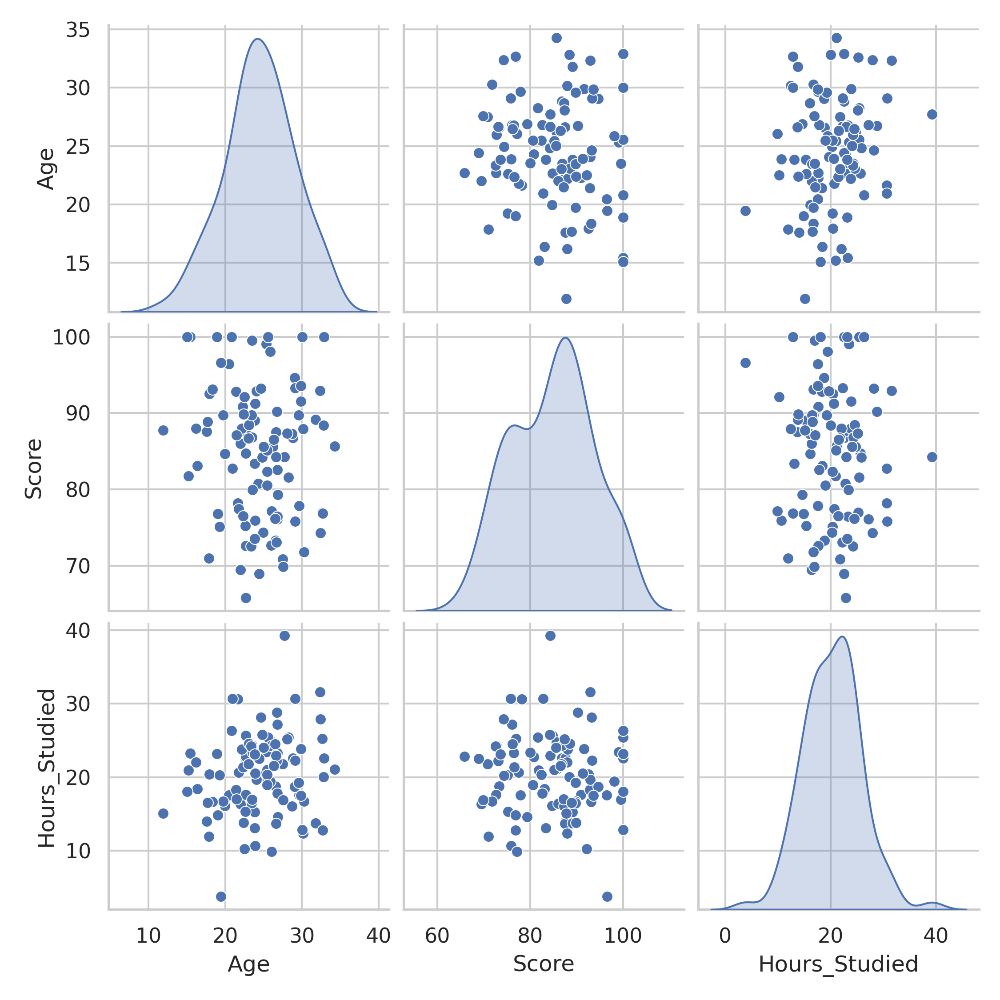

Section 1.2 Useful Tools for Descriptive Statistics and Exploratory Data Analysis
Exploratory Data Analysis (EDA) is a critical step in understanding your data before applying advanced techniques like machine learning. It involves summarizing the main characteristics of a dataset, often using visual methods, to uncover patterns, spot anomalies, test hypotheses, and check assumptions. In this section, we focus on Python-based tools that enable efficient and effective data analysis, tailored for machine learning workflows. While languages like R are powerful for statistics, we emphasize Python due to its widespread use in data science and machine learning communities. Key tools include NumPy for numerical computations, Pandas for data manipulation, and Matplotlib/Seaborn for visualization. These libraries integrate seamlessly, allowing you to load, clean, analyze, and visualize data in a streamlined manner.
A typical EDA workflow includes: loading data, inspecting its structure, handling missing values, computing summary statistics, exploring distributions, and visualizing relationships. Using Jupyter notebooks ensures reproducibility and documentation of your analysis.
Subsection 1.2.1 NumPy: Foundation for Numerical Operations
NumPy (Numerical Python) is the backbone of scientific computing in Python, providing support for large, multi-dimensional arrays and matrices, along with mathematical functions for efficient operations. It’s foundational for Pandas and essential for computing descriptive statistics.
Key Features:
-
Efficient array creation and manipulation (e.g., reshaping, slicing).
-
Statistical functions: mean, median, standard deviation, variance, percentiles.
-
Integration with Pandas DataFrames and visualization libraries.
Example: Compute descriptive statistics for exam scores.
import numpy as np
# Sample data: exam scores
scores = np.array([85, 92, 78, 95, 88, 76, 90, 82])
# Basic statistics
mean = np.mean(scores)
median = np.median(scores)
std_dev = np.std(scores, ddof=1) # Sample std dev
variance = np.var(scores, ddof=1) # Sample variance
percentiles = np.percentile(scores, [25, 50, 75])
print(f"Mean: {mean:.2f}")
print(f"Median: {median:.2f}")
print(f"Sample Standard Deviation: {std_dev:.2f}")
print(f"Sample Variance: {variance:.2f}")
print(f"25th, 50th, 75th Percentiles: {percentiles}")
Output:
Mean: 85.75 Median: 86.50 Sample Standard Deviation: 6.82 Sample Variance: 46.50 25th, 50th, 75th Percentiles: [80.5 86.5 91.25]
NumPy is fast for numerical operations but lacks labeled data handling, which is where Pandas excels.
Subsection 1.2.2 Pandas: Data Manipulation and Analysis
Pandas is a powerful, flexible library for data manipulation and analysis, built on NumPy. Its core data structures are:
-
Series: A one-dimensional labeled array for sequences of data.
-
DataFrame: A two-dimensional labeled table, similar to a spreadsheet or SQL table, ideal for tabular data.
Pandas is designed for cleaning, transforming, analyzing, and visualizing data. It supports multiple file formats (CSV, Excel, JSON, SQL) and integrates with NumPy, Matplotlib, Seaborn, and Scikit-learn, making it a cornerstone for EDA in machine learning.
Why Use Pandas?
-
Handles structured data efficiently (e.g., tabular data).
-
Supports data cleaning (missing values, duplicates, outliers).
-
Enables grouping, aggregation, and statistical summaries.
-
Scales to large datasets with optimized performance.
EDA Workflow with Pandas:
-
Load data (
pd.read_csv(),pd.read_excel()). -
Inspect structure (
head(),info(),describe()). -
Clean data (handle missing values, remove duplicates).
-
Compute statistics and explore distributions.
-
Visualize (integrate with Matplotlib/Seaborn).
Example: Analyzing Student Data Let’s use a realistic dataset of student scores, including a missing value, loaded from a CSV file.
import pandas as pd
# Create sample CSV data (in practice, load from disk)
data = """Name,Age,Score,Passed
Alice,25,85.5,True
Bob,30,90.0,True
Carol,27,88.0,True
Dave,22,76.5,False
Eve,28,,True"""
with open('students.csv', 'w') as f:
f.write(data)
# Load data
df = pd.read_csv('students.csv')
print(df)
Output as a table:
| Name | Age | Score | Passed |
|---|---|---|---|
| Alice | 25 | 85.5 | True |
| Bob | 30 | 90.0 | True |
| Carol | 27 | 88.0 | True |
| Dave | 22 | 76.5 | False |
| Eve | 28 | NaN | True |
Inspect the data using common Pandas methods:
# Inspect data
print("First 3 rows:")
print(df.head(3))
print("\nLast 2 rows:")
print(df.tail(2))
print("\nShape:", df.shape) # (5, 4)
print("\nColumns:", df.columns.tolist())
print("\nInfo:")
print(df.info())
print("\nDescriptive Statistics:")
print(df.describe())
Output of
df.describe():
| Age | Score | |
|---|---|---|
| count | 5.000000 | 4.000000 |
| mean | 26.400000 | 85.000000 |
| std | 3.209361 | 5.958188 |
| min | 22.000000 | 76.500000 |
| 25% | 24.250000 | 83.250000 |
| 50% | 26.000000 | 86.750000 |
| 75% | 27.750000 | 88.500000 |
| max | 30.000000 | 90.000000 |
Clean and transform the data (e.g., handle missing values, filter, add columns, group, sort):
# Handle missing values
print("Missing values:\n", df.isnull())
df['Score'] = df['Score'].fillna(df['Score'].mean()) # Fill NaN with mean
# Filter rows
high_scorers = df[df['Score'] > 85]
print("\nHigh scorers:\n", high_scorers)
# Add new column
df['Grade'] = df['Score'].apply(lambda x: 'A' if x >= 90 else 'B' if x >= 80 else 'C')
print("\nDataFrame with Grade:\n", df)
# Group and aggregate
grouped = df.groupby('Passed')['Score'].agg(['mean', 'count'])
print("\nGrouped by Passed:\n", grouped)
# Sort by Score
df_sorted = df.sort_values(by='Score', ascending=False)
print("\nSorted by Score:\n", df_sorted)
# Chain operations
result = df[df['Age'] > 25][['Name', 'Score']].sort_values(by='Score')
print("\nChained operations (Age > 25, select columns, sort):\n", result)
Visualize the score distribution:

import matplotlib.pyplot as plt
import pandas as pd
# Assuming df from previous code
df['Score'].hist(bins=5, edgecolor='black', alpha=0.7)
plt.xlabel('Score')
plt.ylabel('Frequency')
plt.title('Distribution of Student Scores')
plt.grid(True, alpha=0.3)
plt.savefig('pandas-histogram.png', dpi=300)
plt.show()
For further learning, explore Python for Data Analysis by Wes McKinney (free online) and Kaggle’s Pandas course.
1
wesmckinney.com2
kaggle.comSubsection 1.2.3 Visualization with Matplotlib and Seaborn
Visualization is a cornerstone of EDA, making patterns and relationships in data intuitive. Matplotlib provides customizable, low-level plotting, while Seaborn, built on Matplotlib, offers high-level statistical visualizations with attractive defaults.
Matplotlib Key Features:
-
Flexible plots: histograms, boxplots, scatter plots, line plots.
-
Customizable axes, labels, and styles.
-
Integration with Pandas for direct plotting.
Seaborn Advantages:
-
Statistical plots: histplot with KDE, boxplot, pairplot for correlations.
-
Attractive themes and color palettes.
-
Simplified syntax for complex visualizations.
Example: Visualizing Student Data Using the student DataFrame, create a histogram and boxplot with Matplotlib, and a histplot with KDE and pairplot with Seaborn.

import matplotlib.pyplot as plt
import pandas as pd
# Assuming df from previous code
fig, (ax1, ax2) = plt.subplots(1, 2, figsize=(10, 4))
df['Score'].hist(bins=5, ax=ax1, edgecolor='black', alpha=0.7)
ax1.set_title('Histogram of Scores')
ax1.set_xlabel('Score')
ax1.set_ylabel('Frequency')
ax1.grid(True, alpha=0.3)
df.boxplot(column='Score', ax=ax2)
ax2.set_title('Boxplot of Scores')
ax2.set_ylabel('Score')
ax2.grid(True, alpha=0.3)
plt.tight_layout()
plt.savefig('matplotlib-plots.png', dpi=300)
plt.show()

# --- NEW CODE FOR SEABORN PLOTS ---
import seaborn as sns
import pandas as pd
# Assuming df from previous code
sns.set_theme(style="whitegrid")
fig, ax = plt.subplots(figsize=(8, 5))
sns.histplot(df['Score'], kde=True, ax=ax)
ax.set_title('Histogram with KDE of Scores')
ax.set_xlabel('Score')
ax.set_ylabel('Count')
plt.savefig('seaborn-histplot.png', dpi=300)
plt.show()
# Pairplot for relationships
sns.pairplot(df[['Age', 'Score']], diag_kind='kde')
plt.savefig('seaborn-pairplot.png', dpi=300)
plt.show()
# --- END NEW CODE ---
Real-World Example: Load a larger dataset (e.g., from Kaggle) and visualize distributions and correlations.
import pandas as pd
import seaborn as sns
import matplotlib.pyplot as plt
# Sample larger dataset (simulated for book)
np.random.seed(42)
n = 100
data = pd.DataFrame({
'Age': np.random.normal(25, 5, n),
'Score': np.random.normal(85, 10, n),
'Hours_Studied': np.random.normal(20, 5, n)
})
data['Score'] = data['Score'].clip(0, 100) # Ensure valid scores
# Basic EDA
print(data.describe())
print("\nMissing values:\n", data.isnull().sum())
# Correlation matrix
print("\nCorrelation matrix:\n", data.corr())
# Visualization
plt.figure(figsize=(10, 4))
plt.subplot(1, 2, 1)
sns.histplot(data['Score'], kde=True)
plt.title('Distribution of Scores')
plt.subplot(1, 2, 2)
sns.scatterplot(x='Hours_Studied', y='Score', data=data)
plt.title('Score vs. Hours Studied')
plt.tight_layout()
plt.savefig('./images/essential-probability-and-statistics/eda-large-dataset.png', dpi=300)
plt.show()
# Pairplot
sns.pairplot(data, diag_kind='kde')
plt.savefig('./images/essential-probability-and-statistics/eda-pairplot.png', dpi=300)
plt.show()


NumPy, Pandas, Matplotlib, and Seaborn form a powerful toolkit for EDA. Start with NumPy for numerical operations, use Pandas for data manipulation and cleaning, and leverage Matplotlib/Seaborn for insightful visualizations. Practice with real datasets (e.g., from Kaggle) in Jupyter notebooks to build skills. For advanced machine learning pipelines, you can explore TensorFlow’s Data API later, but mastering these foundational tools is key for beginners. Resources like Python for Data Analysis and Kaggle’s Pandas course offer hands-on learning.
3
wesmckinney.com4
kaggle.com